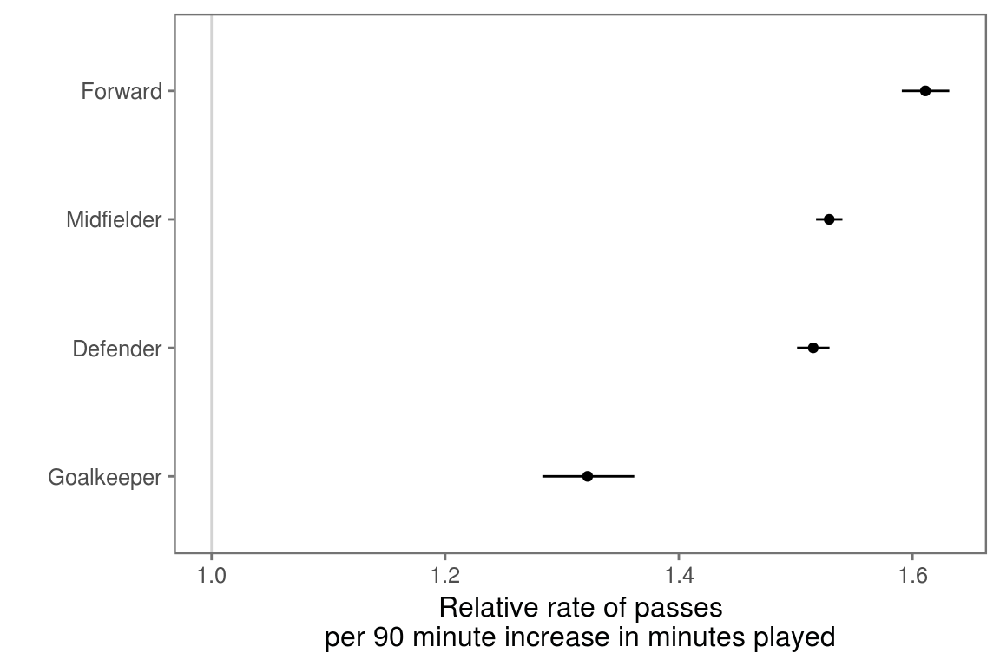
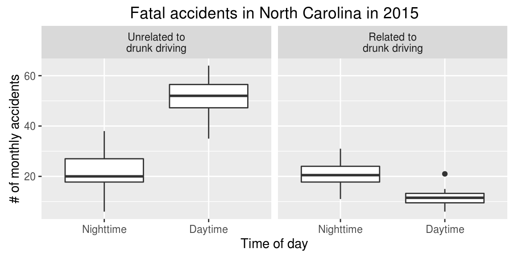

Chapter 7 Entering and cleaning data #2
Download a pdf of the lecture slides covering this topic.
7.1 Parentheses
If you put parentheses around an entire code statement, it will both run the code and print out the answer.
study_months <- c("Jan", "Feb", "Mar")
study_months## [1] "Jan" "Feb" "Mar"(study_months <- c("Jan", "Feb", "Mar"))## [1] "Jan" "Feb" "Mar"7.2 Loops
Loops allow you to “walk through” and repeat the same code for different values of an index. For each run of the loop, R is told that, for some index in some vector, do some code. For example, the following loop specifies: For i in 1:3, print(i).
for(i in c(1, 2, 3)){
print(i)
}## [1] 1
## [1] 2
## [1] 3Note that this code is equivalent to:
i <- 1
print(i)## [1] 1i <- 2
print(i)## [1] 2i <- 3
print(i)## [1] 3Often, the index will be set to a number for each cycle of the loop, and then the index will be used within the code to index vectors or dataframes:
study_months <- c("Jan", "Feb", "Mar")
for(i in c(1, 3)){
print(study_months[i])
}## [1] "Jan"
## [1] "Mar"Often, you want to set the index to sequential numbers (e.g., 1, 2, 3, 4). In this case, you can save time by using the : notation to create a vector of a sequence of numbers:
for(i in 1:3){
print(i)
}## [1] 1
## [1] 2
## [1] 3With this notation, sometimes it may be helpful to use the length function to set the largest index value for the loop as the length of a vector (or nrow for indexing a dataframe). For example:
study_months <- c("Jan", "Feb", "Mar")
for(i in 1:length(study_months)){
print(study_months[i])
}## [1] "Jan"
## [1] "Feb"
## [1] "Mar"Sometimes, you want to set the index for each cycle of the loop to something that is not a number. You can set the index to any class of vector.
Remember that a loop works by saying for some index in some vector, do some code. For example, you may want to run: for study_month in study_months, print(study_month):
study_months <- c("Jan", "Feb", "Mar")
for(study_month in study_months){
print(study_month)
}## [1] "Jan"
## [1] "Feb"
## [1] "Mar"Note that this is equivalent to:
study_month <- "Jan"
print(study_month)## [1] "Jan"study_month <- "Feb"
print(study_month)## [1] "Feb"study_month <- "Mar"
print(study_month)## [1] "Mar"What would this loop do?
vars <- c("Time", "Shots", "Passes", "Tackles", "Saves")
for(i in 1:length(vars)){
var_mean <- mean(worldcup[ , vars[i]])
print(var_mean)
}vars <- c("Time", "Shots", "Passes", "Tackles", "Saves")
for(i in 1:length(vars)){
var_mean <- mean(worldcup[ , vars[i]])
print(var_mean)
}## [1] 208.8639
## [1] 2.304202
## [1] 84.52101
## [1] 4.191597
## [1] 0.6672269What would this loop do?
vars <- c("Time", "Shots", "Passes", "Tackles", "Saves")
for(i in 1:length(vars)){
var_mean <- mean(worldcup[ , vars[i]])
var_mean <- round(var_mean, 1)
out <- paste0("mean of ", vars[i], ": ", var_mean)
print(out)
}To figure out, you can set i <- 1 and then walk through the loop:
i <- 1
(var_mean <- mean(worldcup[ , vars[i]]))## [1] 208.8639(var_mean <- round(var_mean, 1))## [1] 208.9(out <- paste0("mean of ", vars[i], ": ", var_mean))## [1] "mean of Time: 208.9"vars <- c("Time", "Shots", "Passes", "Tackles", "Saves")
for(i in 1:length(vars)){
var_mean <- mean(worldcup[ , vars[i]])
var_mean <- round(var_mean, 1)
out <- paste0("mean of ", vars[i], ": ", var_mean)
print(out)
}## [1] "mean of Time: 208.9"
## [1] "mean of Shots: 2.3"
## [1] "mean of Passes: 84.5"
## [1] "mean of Tackles: 4.2"
## [1] "mean of Saves: 0.7"Often, it’s convenient to create a dataset to fill up as you loop through:
vars <- c("Time", "Shots", "Passes", "Tackles", "Saves")
my_df <- data.frame(variable = vars, mean = NA)
for(i in 1:nrow(my_df)){
var_mean <- mean(worldcup[ , vars[i]])
my_df[i , "mean"] <- round(var_mean, 1)
}vars <- c("Time", "Shots", "Passes", "Tackles", "Saves")
(my_df <- data.frame(variable = vars, mean = NA))## variable mean
## 1 Time NA
## 2 Shots NA
## 3 Passes NA
## 4 Tackles NA
## 5 Saves NAi <- 1
(var_mean <- mean(worldcup[ , vars[i]]))## [1] 208.8639my_df[i , "mean"] <- round(var_mean, 1)
my_df## variable mean
## 1 Time 208.9
## 2 Shots NA
## 3 Passes NA
## 4 Tackles NA
## 5 Saves NAfor(i in 1:nrow(my_df)){
var_mean <- mean(worldcup[ , vars[i]])
my_df[i , "mean"] <- round(var_mean, 1)
}
my_df## variable mean
## 1 Time 208.9
## 2 Shots 2.3
## 3 Passes 84.5
## 4 Tackles 4.2
## 5 Saves 0.7Note: This is a pretty simplistic example. There are some easier ways to have done this:
worldcup %>%
summarize(Time = mean(Time), Passes = mean(Passes),
Shots = mean(Shots), Tackles = mean(Tackles),
Saves = mean(Saves)) %>%
gather(key = var, value = mean) %>%
mutate(mean = round(mean, 1))## var mean
## 1 Time 208.9
## 2 Passes 84.5
## 3 Shots 2.3
## 4 Tackles 4.2
## 5 Saves 0.7Another way to have done this is with apply:
means <- apply(worldcup[ , vars], 2, mean)
(means <- round(means, 1))## Time Shots Passes Tackles Saves
## 208.9 2.3 84.5 4.2 0.7However, you can use this same looping process for much more complex tasks that you can’t do as easily with apply or dplyr tools.
Loops can be very useful for more complex repeated tasks. For example:

Creating this graph requires:
- Create a subset limited to each of the four positions
- Fit a Poisson regression of Passes on Time within each subset
- Pull the regression coefficient and standard error from each model
- Use those values to calculate 95% confidence intervals
- Convert everything from log relative rate to relative rate
- Plot everything
Create a vector with the names of all positions. Create an empty dataframe to store regression results.
(positions <- unique(worldcup$Position))## [1] Midfielder Defender Forward Goalkeeper
## Levels: Defender Forward Goalkeeper Midfielder(pos_est <- data.frame(position = positions,
est = NA, se = NA))## position est se
## 1 Midfielder NA NA
## 2 Defender NA NA
## 3 Forward NA NA
## 4 Goalkeeper NA NALoop through and fit a Poisson regression model for each subset of data. Save regression coefficients in the empty dataframe.
for(i in 1:nrow(pos_est)){
pos_df <- worldcup %>%
filter(Position == positions[i])
pos_mod <- glm(Passes ~ Time,
data = pos_df,
family = poisson(link = "log"))
pos_coefs <- summary(pos_mod)$coefficients[2, 1:2]
pos_est[i, c("est", "se")] <- pos_coefs
}
pos_est[1:2, ]## position est se
## 1 Midfielder 0.004716096 4.185925e-05
## 2 Defender 0.004616260 5.192736e-05Calculate 95% confidence intervals for log relative risk values.
pos_est <- pos_est %>%
mutate(lower_ci = est - 1.96 * se,
upper_ci = est + 1.96 * se)
pos_est %>%
select(position, est, lower_ci, upper_ci) ## position est lower_ci upper_ci
## 1 Midfielder 0.004716096 0.004634052 0.004798140
## 2 Defender 0.004616260 0.004514483 0.004718038
## 3 Forward 0.005299009 0.005158945 0.005439074
## 4 Goalkeeper 0.003101124 0.002770562 0.003431687Calculate relative risk per 90 minute increase in minutes played.
pos_est <- pos_est %>%
mutate(rr_est = exp(90 * est),
rr_low = exp(90 * lower_ci),
rr_high = exp(90 * upper_ci))
pos_est %>%
select(position, rr_est, rr_low, rr_high) ## position rr_est rr_low rr_high
## 1 Midfielder 1.528747 1.517501 1.540077
## 2 Defender 1.515073 1.501258 1.529015
## 3 Forward 1.611090 1.590908 1.631527
## 4 Goalkeeper 1.321941 1.283192 1.361861Re-level the position factor so the plot will be ordered from highest to lowest estimates.
pos_est <- arrange(pos_est, rr_est) %>%
mutate(position = factor(position,
levels = position))
pos_est %>% select(position, est)## position est
## 1 Goalkeeper 0.003101124
## 2 Defender 0.004616260
## 3 Midfielder 0.004716096
## 4 Forward 0.005299009Create the plot:
ggplot(pos_est, aes(x = rr_low, y = position)) +
geom_segment(aes(xend = rr_high, yend = position)) +
geom_point(aes(x = rr_est, y = position)) +
theme_few() +
ylab("") +
scale_x_continuous(paste("Relative rate of passes\nper",
"90 minute increase in minutes played"),
limits = c(1.0, max(pos_est$rr_high))) +
geom_vline(aes(xintercept = 1), color = "lightgray")
7.3 Functions
You can write your own functions for tasks you do a lot.
If you find yourself cutting and pasting a lot, convert the code to a function. Here is an example of a very basic function. This function takes a number as input and adds 1 to that number.
add_one <- function(number){
out <- number + 1
return(out)
}
add_one(number = 3)## [1] 4add_one(number = -1)## [1] 0You can name a function anything you want (although try to avoid names of pre-existing functions). You then include options (including any defaults) and the code to run:
## Note: this code will not run
[function name] <- function([any options and defaults]){
[code to run]
}Example: You want to take a log relative rate estimate determined per minute and convert it to a relative rate per 90 minutes.
rr_per90 <- function(log_rr){
out <- exp(log_rr * 90)
return(out)
}
rr_per90(pos_est$est[1])## [1] 1.321941Example: You want to take a vector of values for a log relative rate estimate and its standard error and convert it to a pretty format of relative rate and confidence intervals per 90 minute increase in playing time:
pretty_rr90 <- function(vec){
ests <- vec[1] + c(0, -1, 1) * 1.96 * vec[2]
ests <- round(exp(90 * ests), 2)
out <- paste0(ests[1], " (", ests[2], ", ", ests[3], ")")
return(out)
}
pretty_rr90(c(0.0031, 0.00017))## [1] "1.32 (1.28, 1.36)"You can test out functions by walking through them, just like you can with loops.
vec <- c(0.0031, 0.00017)
(ests <- vec[1] + c(0, -1, 1) * 1.96 * vec[2])## [1] 0.0031000 0.0027668 0.0034332(ests <- round(exp(90 * ests), 2))## [1] 1.32 1.28 1.36(out <- paste0(ests[1], " (", ests[2], ", ", ests[3], ")"))## [1] "1.32 (1.28, 1.36)"You can use apply to apply a function you’ve created to many rows at a time. For example, you have log relative risk estimates and standard errors for each position in pos_est:
pos_est[ , c("est", "se")]## est se
## 1 0.003101124 1.686543e-04
## 2 0.004616260 5.192736e-05
## 3 0.004716096 4.185925e-05
## 4 0.005299009 7.146148e-05You can apply pretty_rr90 to each row (MARGIN = 1) of this part of the dataframe to get pretty estimates for each position:
apply(pos_est[ , c("est", "se")], MARGIN = 1, FUN = pretty_rr90)## [1] "1.32 (1.28, 1.36)" "1.52 (1.5, 1.53)" "1.53 (1.52, 1.54)"
## [4] "1.61 (1.59, 1.63)"You can use this to create a table to print:
out_tab <- data.frame("Position" = pos_est$position,
"Effect Estimate" = apply(pos_est[ , c("est", "se")],
MARGIN = 1,
FUN = pretty_rr90))
out_tab## Position Effect.Estimate
## 1 Goalkeeper 1.32 (1.28, 1.36)
## 2 Defender 1.52 (1.5, 1.53)
## 3 Midfielder 1.53 (1.52, 1.54)
## 4 Forward 1.61 (1.59, 1.63)And use knitr’s kable() function to print it:
kable(out_tab, format = "markdown")| Position | Effect.Estimate |
|---|---|
| Goalkeeper | 1.32 (1.28, 1.36) |
| Defender | 1.52 (1.5, 1.53) |
| Midfielder | 1.53 (1.52, 1.54) |
| Forward | 1.61 (1.59, 1.63) |
7.4 apply family of functions
First, you need to know about two more object types in R:
matrixlist
A matrix is like a dataframe, but all the values in all columns must be of the same class (e.g., numeric, character):
foo <- matrix(1:10, ncol = 5)
foo## [,1] [,2] [,3] [,4] [,5]
## [1,] 1 3 5 7 9
## [2,] 2 4 6 8 10The matrix will default to make all values the most general class of any of the values, in any column. For example, if we replaced one numeric value with the character “a”, everything would turn into a character:
foo[1, 1] <- "a"
foo## [,1] [,2] [,3] [,4] [,5]
## [1,] "a" "3" "5" "7" "9"
## [2,] "2" "4" "6" "8" "10"R uses matrices a lot for its underlying math (e.g., for the linear algebra operations required for fitting regression models). R can do matrix operations quite quickly.
A list has different elements, just like a dataframe has different columns. However, the different elements of a list can have different lengths (unlike the columns of a dataframe). The different elements can also have different classes.
bar <- list(a = c("a", "b", "c"),
b = 1:5,
c = c(TRUE, FALSE))
bar## $a
## [1] "a" "b" "c"
##
## $b
## [1] 1 2 3 4 5
##
## $c
## [1] TRUE FALSETo index an element from a list, use double square brackets. You can use this either with numbers (which element in the list?) or with names or the $ operator:
bar[[1]]## [1] "a" "b" "c"bar[["b"]]## [1] 1 2 3 4 5bar$c## [1] TRUE FALSELists can be used to contain data with an unusual structure and / or lots of different components. For example, the information from fitting a regression is often stored as a list:
my_mod <- glm(rnorm(10) ~ c(1:10))
is.list(my_mod)## [1] TRUEhead(names(my_mod))## [1] "coefficients" "residuals" "fitted.values" "effects"
## [5] "R" "rank"my_mod[["coefficients"]]## (Intercept) c(1:10)
## 1.0050931 -0.1429895There is also a whole family of apply functions, as part of R’s based package. These include:
apply: Apply a function over all the rows (MARGIN = 1) or columns (MARGIN = 2) of a matrixlapply: Apply a function over elements of a list.sapply: Likelapply, but returns a vector instead of a list.
Convention for apply:
apply([matrix], MARGIN = [margin (1: rows, 2: columns)], FUN = [function])ex <- worldcup[ , c("Shots", "Passes", "Tackles", "Saves")]
head(ex)## Shots Passes Tackles Saves
## Abdoun 0 6 0 0
## Abe 0 101 14 0
## Abidal 0 91 6 0
## Abou Diaby 1 111 5 0
## Aboubakar 2 16 0 0
## Abreu 0 15 0 0apply(ex, MARGIN = 2, mean)## Shots Passes Tackles Saves
## 2.3042017 84.5210084 4.1915966 0.6672269head(apply(ex, MARGIN = 1, sum))## Abdoun Abe Abidal Abou Diaby Aboubakar Abreu
## 6 115 97 117 18 15lapply() will apply a function across a list. The different elements of the list do not have to be the same length (unlike a dataframe, where the columns all have to have the same length).
(ex <- list(a = c(1:5), b = rnorm(3), c = c(5, 3, 3, 2)))## $a
## [1] 1 2 3 4 5
##
## $b
## [1] -2.1852380 -0.2759569 -1.2765488
##
## $c
## [1] 5 3 3 2lapply(ex, FUN = mean)## $a
## [1] 3
##
## $b
## [1] -1.245915
##
## $c
## [1] 3.25sapply() also applies a function over a list, but it returns a vector rather than a list:
sapply(ex, FUN = mean)## a b c
## 3.000000 -1.245915 3.250000This can often be convenient in the context of a large data analysis.
In practice, I do use apply() some, but I can often find a way to do similar things to other apply family functions using the tools in dplyr.
You should know that apply family functions take advantage of the matrix structure in R. This can be one of the fastest way to run code in R. It is definitely faster than doing the same things with loops. However, unless you are working with large datasets, you may not notice a difference.
I would recommend using whichever method makes the most sense to you until you run into an analysis that takes a noticable amount of time to run, and then you might want to work a bit more to optimize your code.
7.5 In-course exercise
7.5.1 Exploring Fatality Analysis Reporting System (FARS) data
- Visit http://metrocosm.com/10-years-of-traffic-accidents-mapped.html and explore the interactive visualization created by Max Galka using this public dataset on US fatal motor vehicle accidents.
- Go to FARS web page to find and download the data for this week’s exercise. We want to get the raw data on fatal accidents. Navigate this page to figure out how you can get this raw data for the whole county for 2015. Download the 2015 data to your computer. What is the structure of how this data is saved (e.g., directory structure, file structure)?
- On the FARS web page, find the documentation describing this raw data. Look through both this documentation and the raw files you downloaded to figure out what information is included in the data.
- Read the
accident.csvfile for 2015 into R (this is one of the files you’ll get if you download the raw data for 2015). Use the documentation to figure out what each column represents. - Discuss what steps you would need to take to create the following plot. To start, don’t write any code, just develop a plan. Talk about what the dataset should look like right before you create the plot and what functions you could use to get the data from its current format to that format. (Hint: Functions from the
lubridatepackage will be very helpful, includingydayandwday). - Discuss which of the variables in this dataset could be used to merge the dataset with other appropriate data, either other datasets in the FARS raw data, or outside datasets.
- Try to write the code to create the plot below. This will include some code for cleaning the data and some code for plotting. I will add one example answer after class, but I’d like you to try to figure it out yourselves first.

7.5.2 Using a loop to create state-specific plots
Next, you will write a loop to write a four-page pdf file with state-specific plots for the states of Colorado, Texas, California, and New York.
- The data has a column called
STATE, but it gives state as a one- or two-digit code, rather than by name. These codes are the state Federal Information Processing Standard (FIPS) codes. A dataset with state names and FIPS codes is available at http://www2.census.gov/geo/docs/reference/state.txt. Read that data into an R object calledstate_fipsand clean it so the first few lines look like this:
## # A tibble: 5 × 2
## state state_name
## <int> <chr>
## 1 1 Alabama
## 2 2 Alaska
## 3 4 Arizona
## 4 5 Arkansas
## 5 6 California- Read the 2015 FARS data into an R object named
accident. Use all the date and time information to create a column nameddatewith the date and time of the accident. Include information on whether the accident was related to drunk driving (FALSE if there were 0 drunk drivers, TRUE if there were one or more), and create columns that gives whether the accident was during the day (7 AM to 7 PM) or not as well as the month of the accident (for this last column, you can either retain it from the original data or recalculate it based on the newdatevariable). Filter out any values where the date-time does not render (i.e.,dateis a missing value). The first few rows of the cleaned dataframe should look like this:
## # A tibble: 5 × 5
## state date drunk_dr daytime month
## <int> <dttm> <lgl> <lgl> <dbl>
## 1 1 2015-01-01 02:40:00 TRUE FALSE 1
## 2 1 2015-01-01 22:13:00 FALSE FALSE 1
## 3 1 2015-01-01 01:25:00 TRUE FALSE 1
## 4 1 2015-01-04 00:57:00 TRUE FALSE 1
## 5 1 2015-01-07 07:09:00 FALSE TRUE 1- Join the information from
state_fipsinto theaccidentdataframe. There may be a few locations in thestate_fipsdataframe that are not included in theaccidentdataframe (e.g., Virgin Islands), so when you join keep all observations inaccidentbut only the observations instate_fipsthat match at least one row ofaccident. The first few rows of the joined dataset should look like this:
## # A tibble: 5 × 6
## state date drunk_dr daytime month state_name
## <int> <dttm> <lgl> <lgl> <dbl> <chr>
## 1 1 2015-01-01 02:40:00 TRUE FALSE 1 Alabama
## 2 1 2015-01-01 22:13:00 FALSE FALSE 1 Alabama
## 3 1 2015-01-01 01:25:00 TRUE FALSE 1 Alabama
## 4 1 2015-01-04 00:57:00 TRUE FALSE 1 Alabama
## 5 1 2015-01-07 07:09:00 FALSE TRUE 1 Alabama- Write the code to create boxplots for Colorado of the distribution of total accidents within each month. Create separate boxplots for daytime and nighttime accidents, and facet by whether the accident was related to drunk driving. The plot should look like the plot below.

- Write a loop to create a plot like the one you just made for Colorado for four different states– Colorado, Texas, California, and New York. The code should write the plots out to a pdf, with one plot per page of the pdf. (Hint: To get a loop to print out a plot created with ggplot, you must explicitly print the plot object. For example, you could assign the plot to
a, and then you would runprint(a)within your loop as the last step.)
7.5.2.1 Example R code
Here is example R code for creating state-specific plots using a loop:
state_fips <- read_delim("http://www2.census.gov/geo/docs/reference/state.txt",
delim = "|") %>%
rename(state = STATE,
state_name = STATE_NAME) %>%
select(state, state_name) %>%
mutate(state = as.integer(state))
accident <- read_csv("data/accident.csv") %>%
select(STATE, DAY:MINUTE, DRUNK_DR) %>%
rename(state = STATE,
drunk_dr = DRUNK_DR) %>%
select(-DAY_WEEK) %>%
unite(date, DAY:MINUTE, sep = "-") %>%
mutate(date = dmy_hm(date),
drunk_dr = drunk_dr >= 1,
daytime = hour(date) %in% c(7:19),
month = month(date)) %>%
filter(!is.na(date)) %>%
left_join(state_fips, by = "state")
pdf("StateFARSPlots.pdf", height = 3.5, width = 7)
state_list <- c("Colorado", "Texas", "California", "New York")
for(which_state in state_list){
a <-accident %>%
filter(state_name == which_state) %>%
mutate(drunk_dr = factor(drunk_dr, labels =
c("Unrelated to\ndrunk driving",
"Related to\ndrunk driving")),
daytime = factor(daytime, labels = c("Nighttime", "Daytime"))) %>%
group_by(daytime, month, drunk_dr) %>%
summarize(accidents = n()) %>%
ggplot(aes(x = daytime, y = accidents, group = daytime)) +
geom_boxplot() +
facet_wrap(~ drunk_dr, ncol = 2) +
xlab("Time of day") + ylab("# of monthly accidents") +
ggtitle(paste("Fatal accidents in", which_state, "in 2015"))
print(a)
}
dev.off()7.5.3 Writing a function to create state-specific plots
- Adapt the code that you wrote for the loop and write a function that will create a state-specific plot when you call it. This function should have inputs of
datafrandwhich_state, wheredatafris the dataframe with the full dataset (accidentin this case) andwhich_stateis the name of the state for which you’d like to create the plot. Name your functionsmake_state_plot. Here are a few examples of running this function:
make_state_plot(accident, which_state = "California")
make_state_plot(accident, which_state = "North Carolina")
make_state_plot(accident, which_state = "Illinois")
- In general, there is a pattern of more of the fatal accidents during the daytime are unrelated to drunk driving versus related, while the pattern is reversed for nighttime accidents. Use your function to see if you can find any states that don’t follow this pattern.
- So far, we have not covered error checking in functions. In the function that you just wrote, we are assuming that the user will never give inputs that would cause errors. Look through the code for your function and see what assumptions we’re making about what values a user would input for
datafrandwhich_state. What could go wrong if a user does not comply with these assumptions? - The best practice when writing functions, especially for others to use, is to use the package::function syntax to identify which package each function comes from. For example, if you’re using
mutatein a function, you should write the function code asdplyr::mutate. Go back through the code for the function you wrote. Every time it uses a function that is not part of base R, change the code to use this package::function syntax.
7.5.3.1 Example R code
Here is some example R code for writing the function to create state-specific plots:
make_state_plot <- function(datafr, which_state){
a <- datafr %>%
filter(state_name == which_state) %>%
mutate(drunk_dr = factor(drunk_dr,
labels = c("Unrelated to\ndrunk driving",
"Related to\ndrunk driving")),
daytime = factor(daytime, labels = c("Nighttime", "Daytime"))) %>%
group_by(daytime, month, drunk_dr) %>%
summarize(accidents = n()) %>%
ggplot(aes(x = daytime, y = accidents, group = daytime)) +
geom_boxplot() +
facet_wrap(~ drunk_dr, ncol = 2) +
xlab("Time of day") + ylab("# of monthly accidents") +
ggtitle(paste("Fatal accidents in", which_state, "in 2015"))
return(a)
}
# With package::function notation
make_state_plot <- function(datafr, which_state){
a <- datafr %>%
dplyr::filter(state_name == which_state) %>%
dplyr::mutate(drunk_dr = factor(drunk_dr,
labels = c("Unrelated to\ndrunk driving",
"Related to\ndrunk driving")),
daytime = factor(daytime, labels = c("Nighttime", "Daytime"))) %>%
dplyr::group_by(daytime, month, drunk_dr) %>%
dplyr::summarize(accidents = n()) %>%
ggplot2::ggplot(ggplot2::aes(x = daytime, y = accidents,
group = daytime)) +
ggplot2::geom_boxplot() +
ggplot2::facet_wrap(~ drunk_dr, ncol = 2) +
ggplot2::xlab("Time of day") + ggplot2::ylab("# of monthly accidents") +
ggplot2::ggtitle(paste("Fatal accidents in", which_state, "in 2015"))
return(a)
}